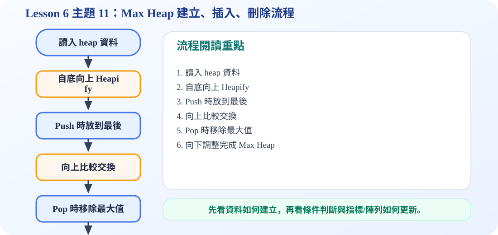

核心觀念流程圖
Max Heap 的規則：每一個父節點都必須大於或等於它的子節點，因此最大值一定在 root。
一、Building a Heap：如何建立最大堆積樹？
建立 Max Heap 時，不是從第一個節點開始，而是從最後一個「有子節點的父節點」開始，也就是 index = n / 2 的位置。因為葉節點本身已經可以視為合法 heap，不需要再調整。
從 index 5、4、3、2、1 依序往下調整，最後 root 會變成最大值。
二、Insertion：插入新節點為什麼要 bubble up？
插入時一定先放在陣列最後，讓樹仍然保持 complete binary tree。接著比較新節點與父節點，如果新節點比較大，就和父節點交換，直到符合 Max Heap 規則。
三、Deletion：刪除最大值為什麼要 trickle down？
Max Heap 的最大值在 root，所以刪除時會先刪除 root。為了保持 complete binary tree，要把最後一個節點搬到 root，再往下和較大的 child 比較並交換。
四、時間複雜度
插入最多從葉節點一路往上到 root，刪除最多從 root 一路往下到葉節點，因此兩者最壞情況都是 O(log n)。建立 heap 若用 bottom-up heapify，整體可達 O(n)。
C 程式碼：建立、插入、刪除 Max Heap
/*
中文註解版程式：max_heap_build_insert_delete.c
說明：主題 11：建立、插入、刪除 Max Heap。從完整二元樹建立最大堆積樹，並維持 heap property。
閱讀方式：先看資料結構定義，再看操作函式，最後看 main() 如何測試。
*/
// 匯入標準輸入輸出函式庫，提供 printf / scanf 等功能。
#include <stdio.h>
// 設定陣列容量上限，避免範例程式超出固定大小。
#define MAX_SIZE 100
// 印出 Heap 陣列內容；本範例使用 index 1 作為 root。
void printHeap(int heap[], int size) {
printf("Heap array: ");
for (int i = 1; i <= size; i++) {
printf("%d ", heap[i]);
}
printf("\n");
}
// 交換兩個整數的值，用於排序或 Heap 調整。
void swap(int *a, int *b) {
int temp = *a;
*a = *b;
*b = temp;
}
// 向下調整 Heap：parent 若小於 child，就與較大的 child 交換。
void heapifyDown(int heap[], int size, int index) {
while (1) {
int left = index * 2;
int right = index * 2 + 1;
int largest = index;
if (left <= size && heap[left] > heap[largest]) {
largest = left;
}
if (right <= size && heap[right] > heap[largest]) {
largest = right;
}
if (largest == index) break;
swap(&heap[index], &heap[largest]);
index = largest;
}
}
// 建立 Max Heap：從最後一個非葉節點開始，往 root 方向逐一 heapify。
void buildMaxHeap(int heap[], int size) {
for (int i = size / 2; i >= 1; i--) {
heapifyDown(heap, size, i);
}
}
// 插入 Max Heap：新資料先放最後，再 bubble up 維持最大堆積性質。
void insertMaxHeap(int heap[], int *size, int value) {
(*size)++;
int index = *size;
heap[index] = value;
while (index > 1 && heap[index / 2] < heap[index]) {
swap(&heap[index / 2], &heap[index]);
index = index / 2;
}
}
// 刪除最大值：取出 root，把最後節點補到 root，再向下調整。
int deleteMax(int heap[], int *size) {
if (*size == 0) {
printf("Heap is empty.\n");
return -1;
}
int maxValue = heap[1];
heap[1] = heap[*size]; // 用最後一個節點補到 root 位置
(*size)--; // Heap 大小減少一個
heapifyDown(heap, *size, 1); // 從 root 開始向下修復 Max Heap
return maxValue;
}
// 主程式：建立測試資料，呼叫上方函式，觀察輸出結果。
int main() {
int heap[MAX_SIZE] = {0, 4, 1, 3, 2, 16, 9, 10, 14, 8, 7};
int size = 10;
printf("Original complete binary tree:\n");
printHeap(heap, size);
buildMaxHeap(heap, size);
printf("After building max heap:\n");
printHeap(heap, size);
insertMaxHeap(heap, &size, 20);
printf("After inserting 20:\n");
printHeap(heap, size);
int deleted = deleteMax(heap, &size);
printf("Deleted max value: %d\n", deleted);
printf("After deleting max:\n");
printHeap(heap, size);
return 0;
}
可編輯 C 程式範例：含中文註解與線上編輯器
這一段提供可直接修改的 C 程式碼。可以按「複製程式」貼到線上編輯器執行，也可以下載 .c 檔案。
程式題目教學內容：樹的基本概念示範
一、程式題目講解
本題用最小的 C 程式建立一個 root 與兩個 children，讓學生理解樹不是單純線性串列，而是由根節點往下分支的階層結構。重點觀念包含 root、children、leftChild 與 rightSibling 的連結方式。
二、完整程式碼
完整可執行程式碼已保留在上方「可編輯 C 程式範例：含中文註解與線上編輯器」區塊中，檔名為 max_heap_build_insert_delete.c。該程式碼已加入中文註解，學生可以直接複製到 OnlineGDB、Programiz 或 OneCompiler 執行。
三、程式執行結果
Root = A
Children = B, C輸出先顯示根節點 A，再顯示 A 的兩個孩子 B、C。因為程式中 A 的 leftChild 指向 B，而 B 的 rightSibling 指向 C，所以可以用 Left-Child Right-Sibling 的方式表示多個子節點。
四、程式流程圖與流程圖說明
本頁下方已保留原本的程式流程圖。閱讀流程圖時，可以依序掌握「初始化資料或節點 → 執行主要函式或判斷 → 輸出結果」的過程。流程由建立節點開始，先建立 A、B、C 三個節點，再讓 A 連到第一個孩子 B，並讓 B 連到同層兄弟 C，最後印出 root 與 children。
五、重要函數與語法說明
createNode(char data)：配置並初始化一個樹節點；malloc(sizeof(TreeNode))：向記憶體配置節點空間；printf()：輸出根節點與子節點資料。
六、整體說明
本題的重點是理解一般樹可以透過指標連結來表示，leftChild 負責往下一層，rightSibling 負責同一層的下一個節點。
程式流程圖：Max Heap 建立、插入、刪除流程
下圖是本主題對應的程式執行流程，適合搭配本頁 C 程式碼一起看。

流程講解
- 建立 max heap 可由最後一個非葉節點開始，自底向上做 heapify。
- Push 時新資料先放最後，若比 parent 大就往上交換。
- Pop 時取出 root 最大值，最後元素補到 root。
- 再往下與較大的 child 比較，直到 heap property 恢復。
這張流程圖把本頁程式的執行順序整理成一條清楚路徑。閱讀時先看輸入與資料如何建立，再看條件判斷、指標或陣列索引如何改變，最後用輸出結果確認程式邏輯是否正確。